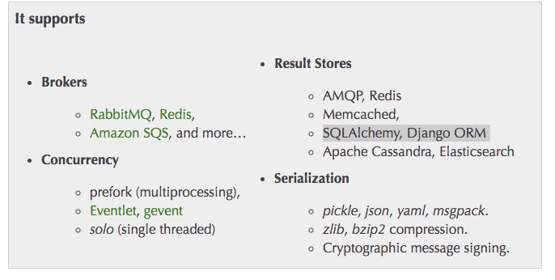

Celery是一种分布式的异步任务队列,让应用程序可能需要执行任何消耗资源的任务都交给任务队列,让应用程序能够自如快速地相应客户端地请求
任务队列是一种被用来向线程或者机器分发任务的机制,一个任务队列输入的单元被称为一个task,专用的worker线程持续的监听任务队列等待新的任务出现去执行.
Celery的通信通过消息来执行,通常使用一个broker来在客户端和worker之间作为中间件.初始化一个任务时,客户端发送一个message给任务队列,然后broker分发message向各个worker
Celery需要一个消息缓存区发送和接受消息,RabbitMQ和Redis来作为broker,即消息的中间件
异步任务: 简而言之，做一个注册的功能，在用户使用邮箱注册成功之后，需要给该邮箱发送一封激活邮件。如果直接放在应用中，则调用发邮件的过程会遇到网络IO的阻塞，比好优雅的方式则是使用异步任务，应用在业务逻辑中触发一个异步任务。

首先需要创建一个Celery实例,即Celery application(app).
xxxxxxxxxxbrokers = 'redis://127.0.0.1:6379/5'backend = 'redis://127.0.0.1:6379/6'app = Celery('tasks', broker=brokers, backend=backend)其中Celery中:
执行我们所定义的任务,需要使用delay()方法
xxxxxxxxxxfrom tasks import addadd.delay(4,4)执行这个任务后,可以被之前开启的worker线程进行执行,并从work控制台中看到输出.
执行这个任务后,返回一个异步结果(AsyncResult)实例,这个结果可以被用来检查任务的状态,等待任务去完成,或者获得任务的返回值(如果任务失败,返回exception或traceback)
结果默认是不可用的,如果想要使用RPC或者保存踪迹任务结果在数据库中,需要配置Celery去使用一个结果后端(result backend)
如果需要保存任务运行的轨迹,Celery 需要存储状态在一些内建(built-in)的后端,例如SQLAIchemy/DjangoORM/Memcached/Redis/RPC(RabbitMQ/AMQP)等,或者其他自定义的后端
比较流行的选择是,选择RabbitMQ作为 Message broker (消息中间件),使用Redis作为结果后端
xxxxxxxxxxapp = Celery('tasks', backend='redis://localhost', broker='pyamqp://'通过ready 可以知道当前任务是否完成
xxxxxxxxxxresult = add.delay(4,4)result.ready()可以通过如下方式进行配置信息的设定
xxxxxxxxxxapp.config_from_object('celeryconfig')celeryconfig.py
xxxxxxxxxxbroker_url = 'pyamqp://'result_backend = 'rpc://'task_serializer = 'json'result_serializer = 'json'accept_content = ['json']timezone = 'Europe/Oslo'enable_utc = True可以通过配置文件实现定时每隔一段时间去执行一个任务
config.py 配置详情看官方文档
xxxxxxxxxx#!/usr/bin/env python# -*- coding:utf-8 -*-from __future__ import absolute_importCELERY_RESULT_BACKEND = 'redis://127.0.0.1:6379/5'BROKER_URL = 'redis://127.0.0.1:6379/6'CELERY_TIMEZONE = 'Asia/Shanghai'from datetime import timedeltaCELERYBEAT_SCHEDULE = { 'add-every-30-seconds': { 'task': 'proj.tasks.add', 'schedule': timedelta(seconds=30), 'args': (16, 16) },}使用了scheduler,则需要启动celery需要加上-B参数
主要侧重点:异步任务执行的过程中,发生异常之后,进行重试(retry)的操作
处理任务返回之后的东西
通过发送一个消息,异步地去执行一个任务.
详细参数见官方文档
重要参数(parameters):
返回: AsyncResult
可以使用一个守护进程池(Daemonization)来作为Worker
在控制台可以通过如下命令,启动Celery worker来执行任务
xxxxxxxxxxcelery -A proj worker --loglevel=info
在控制台启动celery worker还有其他选项:
xxxxxxxxxxcelery -A app worker --concurrency=4celery -A app worker --concurrency=1000 -P eventlet
celery嵌套启动
xxxxxxxxxxcelery --app=app.libs.<module name> worker --loglevel=info
celery添加任务task, 以及其他配置
xxxxxxxxxxcelery_app.conf.update( CELERY_IMPORTS=[ 'app.tasks.sdk', ], CELERY_REDIS_HOST=REDIS_CONF['host'], CELERY_REDIS_PASSWORD=REDIS_CONF['password'], CELERY_REDIS_PORT=REDIS_CONF['port'], CELERY_REDIS_MAX_CONNECTIONS=REDIS_CONF['poolsize'])-P 为进程池可以为:prefork(默认),eventlet,gevent,solo
在Worker Options中还有: -n hostname 应该是用来使用分布式的管理
使用celery时,需要在最外层项目的根目录下启动celery app, 在根目录下设置一个py文件用来导入所有的任务以及celery app